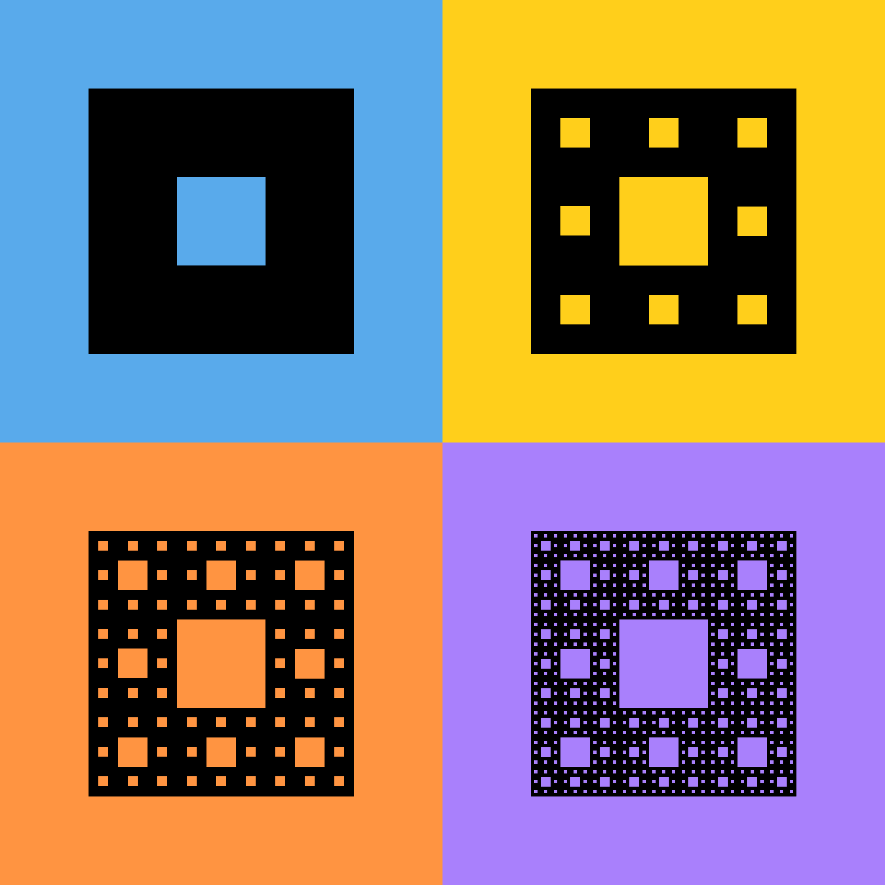

The TDAverse
Modular, interoperable, and extensible topological data analysis in R
University of Florida
UMR CNRS 6629, Nantes University
July 9, 2026
Introductions
{kind=link}
{kind=link}
Topological Data Analysis (in R)
What is topological data analysis?
Topology is a branch of mathematics at the interface of geometry and analysis.
- Geometry is the study of rigid shapes (angle, curvature, distance).
- Analysis is the study of limits (continuity, smoothness).
- Topology is the study of properties of shapes that are invariant under continuous deformations: \[\text{Topology} \, = \, \text{Geometry} \,\, / \,\, \text{Analysis}\]
The core of Topological Data Analysis is persistent homology.
Persistent homology
You’ve probably encountered 0-dimensional persistent homology before.
… better known as hierarchical clustering.
{kind=link}

Persistent homology
Persistent homology tracks not only
- connected components
but also
- loops (see figure),
- cells,
and
3+. higher-dimensional enclosures.

Applications of PH
{kind=link}
… are numerous and diverse.
Check out the Database of Original & Non-theoretical Uses of Topology:
How can R users do TDA?
We see (heretofore) R packages for TDA belonging to 3 types:
- routine-specific
(ripserr, simplextree, kernelTDA, TDAvec)
- analysis-specific
(TDAstats, TDApplied, ashapesampler, lookout)
- general-purpose
(TDA, TDAkit, rgudhi)
Each meets certain needs, but they form a fragile ecosystem:
- duplication of methods
- hidden dependencies
- sensitivity to upgrades
- difficulty coupling
The TDAverse
{kind=link}
{kind=link}
{kind=link}
Design principles
Accessible
Empower users to learn and request.
- Expressive names
- Density of examples
Opinionated
Reduce burdens on collaborators & reviewers.
- Evidence/practice-based defaults
- Alert to any non-standard choices
Modular
Ease maintenance, contributions, and extensions.
- Different packages for different tasks
- Different packages for different steps
Interoperable
Reduce burdens on learners & programmers.
- Unified structures & conventions
- Co-extensions with other collections
These principles are inspired by those of other package collections and by our own experiences as enthusiasts, users, and developers in a niche area.
📦 Packages
Engines: {ripserr}
Goal of the package
- Bindings to Ripser and related C++ libraries for computing persistent homology
Current features:
vietoris_rips()binding to Ripsercubical()binding to Cubical Ripser- Helper functions to pre- and post-process data
{kind=link}
{kind=link}
Research Assistants
Bindings, enhancements, and other contributions by Kent Phipps, Sean Hershkowitz, and Alice Zhang.
{kind=link}
Utilities: {phutil}
Goal of the package
- Low-level package that defines a unifying toolbox for handling persistent homology data;
- Stands for Persistent Homology Utilities.
Current features:
- A ‘persistence’ class to store a single persistent diagram;
- A ‘persistence_set’ class to store collections of persistent diagrams as a list of ‘persistence’ objects;
- Functions to compute distances between persistence diagrams.
{kind=link}
{kind=link}
{kind=link}
Distances between diagrams
Implemented distances1
- The \(p\)-Wasserstein distance: \(W_p^q (X, Y) = \inf_{\varphi : X \to Y} \left( \sum_{x \in X} \left\| x - \varphi(x) \right\|_q^p \right)^{1/p}\)
- The bottleneck distance: \(W_\infty^q (X, Y) = \inf_{\varphi : X \to Y} \left( \sup_{x \in X} \left\| x - \varphi(x) \right\|_q \right)\)
where \(X\) and \(Y\) are two persistence diagrams, \(\varphi\) is a bijection between the points of \(X\) and \(Y\) (including points on the diagonal), and \(\| \cdot \|_q\) is the \(q\)-norm in the plane.
Available functions: bottleneck_distance(), wasserstein_distance(), bottleneck_pairwise_distances and wasserstein_pairwise_distances().
{kind=link}
Distances between diagrams
tdaunif::sample_trefoil(n = 1000, sd = 0.1)
tdaunif::sample_arch_spiral(n = 1000, sd = 0.1, arms = 2){kind=link}
Distances between diagrams
TDA::ripsDiag( ... ) # on each point cloud
ph_set <- phutil::as_persistence_set(c(trefoils, arch_spirals)){kind=link}
TDA::ripsDiag() and visualized with {ggtda}.
Distances between diagrams
D <- wasserstein_pairwise_distances(
ph_set, # A list of persistence objects
p = 2, # The order of the Wasserstein distance
dimension = 0, # The homological dimension to consider
ncores = 12 # The number of CPU cores to use
){kind=link}
Distances between diagrams
{kind=link}
Recipes: {tdarec}
Tidymodels extension for persistent homology and its vectorizations
Current features:
- {ripserr}-powered recipe steps to compute persistent homology from data
- {TDAvec}-powered recipe steps to compute numeric features from persistent diagrams
- Miscellaneous related pre-processing steps
- Tunable dials for parameters governing the above
{kind=link}
{kind=link}
Collaborators
Umar Islambekov and Aleksei Luchinsky coordinated development of {TDAvec} with the scope and needs of {tdarec}.
{kind=link}
{kind=link}
Inference: {inphr}
Existing packages
- {TDA}: statistical significance of features in a single diagram (Fasy et al. 2014; Chazal et al. 2014) and density clustering using GUDHI, Dionysus and PHAT;
- {TDAstats}: comprehensive toolset for conducting TDA (Wadhwa et al. 2018);
- {TDAkit}: ML using functional summaries of persistence homology for clustering, hypothesis testing, and visualization (Wasserman 2018).
Limitations
- {TDA}: makes inference on a single diagram only;
- {TDAstats}: compares two diagrams only;
- {TDAkit}: compares functional summaries only.
Inference: {inphr}
Goal of the package
Comparing populations of persistence diagrams
- using permutation hypothesis testing;
- involving several collections of persistence diagrams.
Current features
two_sample_diagram_test():- permutation test for comparing two collections of persistence diagrams
- uses the \(p\)-Wasserstein distance;
- permutes the rows and columns of the distance matrix to compute the empirical distribution of one or more test statistics based on inter-point distances (Lovato et al. 2021);
two_sample_functional_test():- permutation test for comparing two collections of persistence diagrams based on some functional summary of them;
- achieved using the interval-wise testing procedure of Pini and Vantini (2017).
Invitations
Connecting multiple universes
{kind=link}
Future developments
Packages in development
- {ggtda}: {ggplot2} extension for persistence data
- {plt}: binding to the
Persistence Landscapes ToolboxC++ library - {rgp}: binding to the
ReebGraphPairingJava program - {landmark}: shape-preserving subsampling methods
Packages in incubation
- {pheng}: engine deployment for persistent homology
- {phrou}: bindings to common routines
Packages in limbo
- {Mapper}: R6 classes for mapper constructions
- {Cover}: R6 classes for topological covers
Concluding remarks
Contributing to the TDAverse
- TDAverse GitHub organisation: https://github.com/tdaverse
- Issues? Ideas? Please contact us!
Acknowledgments
🙏 This work was funded by an ISC grant from the R Consortium that we would like to gratefully acknowledge.
{kind=link}

Aymeric Stamm · astamm.github.io · aymeric.stamm@cnrs.fr · useR! 2026